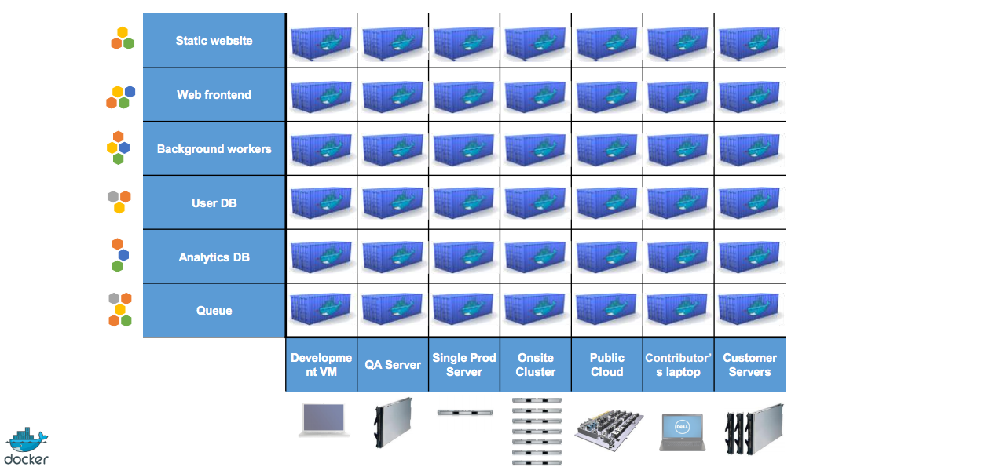

Conceptos básicos
- Virtualización: Creación por software de la versión virtual de un recurso tecnológico, habitualmente servidores.
- Maquina virtual (VM): Emulación de una ordenador físico por medio de software en un sistema anfitrión.
- Hipervisor: Sistema anfitrión sobre el que funcionan las VM, puede ser por software ó hardware (poco habituales).
- Escritorio: virtualbox, vmware, etc.
- Servidor: xenserver, proxmox, etc.
Linux Containers (LCX)
- Permite que un servidor físico ejecute múltiples instancias de sistemas operativos aislados compartiendo el core.
- Pueden tener diferentes Sistemas Operativos (debian, centos, redhat, ubuntu, etc.) siempre que tengan la misma versión del core que el sistema anfitrión.
- Consumen menos recursos hardware y software que las VM.
- Implementación basada en imágenes.
- Aislamiento de aplicaciones que se pueden combinar.
La matriz del infierno

Y llegó Docker
- LCX independiza sistemas operativos ligeros sobre los que lanzar aplicaciones.
- Docker define un formato para empaquetar una aplicación y todas sus dependencias en un solo objeto que pueden ser transferidas a cualquier otro sistema Docker, y ser ejecutados allí con la garantía de que el entorno de ejecución será siempre el mismo.
- Contenedores: contienen todo lo necesario para que una aplicación pueda funcionar.
- Imágenes: sistema operativo con aplicaciones instaladas y configuradas.
La solución de Docker
Docker Registry
- Registry: Servidor que contiene repositorios e imágenes.
- Repositorios: Contiene imagenes creadas y listas para ser descargadas.
- Repositorio oficial
https://hub.docker.com
- En Dockerhub podemos crear repositorios privados ó públicos.
- Dockerhub se integra con repositorios de código como GitHub y construye las imagenes al actualizarlos.
- También podemos tener nuestro propio Registry que se crea a partir de una imagen Docker.
Requisitos de Docker
- Docker necesita que el host sea linux 64bits y que el core sea como mínimo v3.10, se recomienda ubuntu o debian aunque puede ser cualquier distro.
- uname -r nos devuelve la versión del core.
- hay varios métodos para instalarlo, vamos a explicarlo sobre debian 8.
Instalación en Linux
- Actualizamos Apt sources
editamos /etc/apt/sources.list.d/docker.list y le añadimos
apt-key adv --keyserver hkp://p80.pool.sks-keyservers.net:80 --recv-keys 58118E89F3A912897C070ADBF76221572C52609D - Añadimos el repo
editamos /etc/apt/sources.list.d/docker.list y le añadimos
deb https://apt.dockerproject.org/repo debian-jessie main - Actualizamos paquetes
apt-get update - Instalamos docker y levantamos el servicio
apt-get install docker-engine
service docker start
Windows y Mac OSX
- Necesitamos un hipervisor como Virtualbox
- Windows 7 ó superior docs.docker.com/engine/installation/windows
- Mac OSX 10.8 ó superior docs.docker.com/engine/installation/mac
- Docker toolbox
www.docker.com/docker-toolbox - Boot2docker >> Tiende a desaparecer.
- Vagrant
www.vagrantup.com/docs/provisioning/docker.html
Docker machine
Parte de Docker Toolbox, imprescindible en osx y windows.- Creamos la máquina
docker-machine create -d virtualbox drupalcamp - Para que nuestro la reconozca
eval $(docker-machine env drupalcamp) - Levantamos la máquina
docker-machine start drupalcamp - Paramos la máquina
docker-machine stop drupalcamp
Instalación en servicios cloud
docs.docker.com/engine/installation/cloud docs.docker.com/machine/drivers
Linea de comandos
Sintaxis:docker [OPTIONS] COMMAND [argumentos]docker [OPTIONS] COMMAND [argumentos] IMAGEEjemplos:
docker exec -it 4ac7ebc37986 bashdocker run -d --link db:mysql -p 80:80 drupal:7docker COMMAND --help
Cómo funciona?
- Descargamos una imagen base de un repositorio.
docker pull - A partir de la imagen base creamos nuestro contenedor.
docker run - Realizamos los cambios que deseamos sobre el contenedor.
- Creamos nuestra imagen personalizada
docker commit - Subimos la imagen a un repositorio (público ó privado).
docker push - Reutilizamos nuestra imagen docker como base para nuevos contenedores.
Demo
Docker-compose
Constructor de aplicaciones multi-contenedorQué necesitamos:
- Carpeta del proyecto.
- fichero docker-compose.yml.
- levantar todo: docker compose up
qué contiene docker-compose.yml?
- descriptor de los contenedores.
- formato de serialización yaml.
- especificamos: contenedores, propiedades, variables de entorno, etc
Demo
Dockerfile
Docker build Construye un contenedor a partir de un Dockerfile.Dockerfile: Archivo de texto plano que contiene un conjunto de instrucciones para construir un contenedor.
dockerfile -> docker build ==== makefile -> drush make
Qué necesitamos?
- Carpeta del proyecto.
- Archivo Dockerfile.
- Construir: docker build.
Ejemplos de Dockerfile: github, github y github.
docs.docker.com/engine/reference/builder